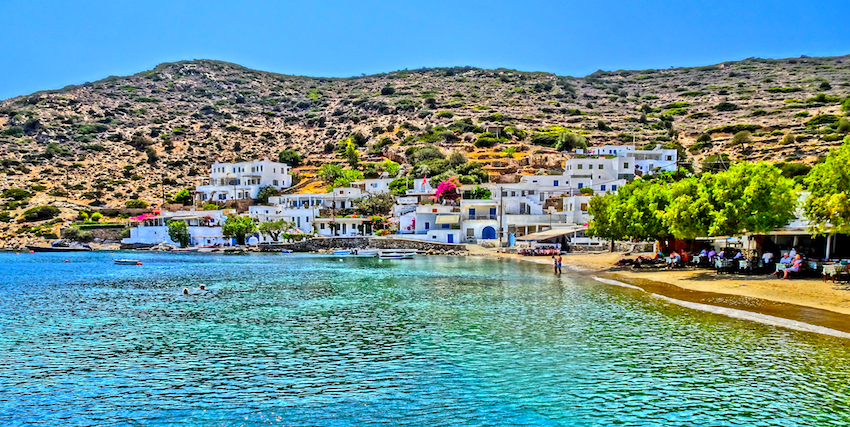
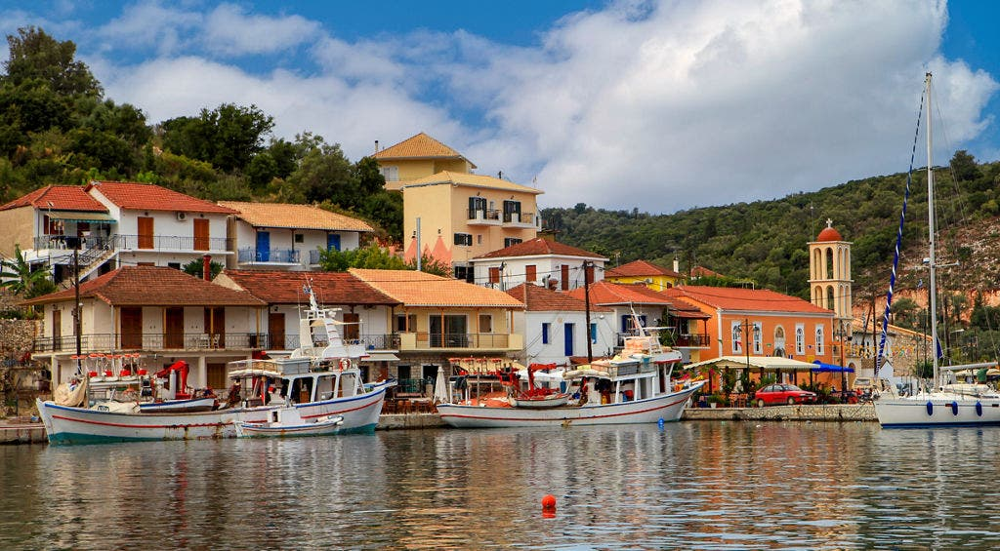

Vathy & die Bucht von Molos
Vathy ist der Hauptort und das Herz von Ithaka. Die Bucht schneidet tief in das Land ein und bietet Schiffen aus aller Welt einen sicheren Hafen. Mit ihren traditionellen Häusern und gemütlichen Tavernen verzaubert die Stadt jeden Besucher.
Bildergalerie (Klicke auf ein Bild)


